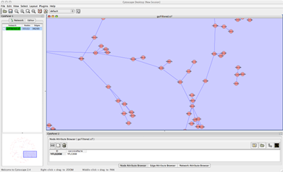
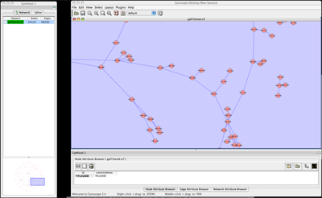
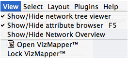
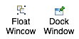

What are CytoPanels?
CytoPanels are floatable / dockable panels designed to cut down on the number of pop-up windows within Cytoscape and to create a more unified user experience. The following screenshot shows the galFiltered.sif file loaded into Cytoscape. In CytoPanel 1, the CytoPanel on the left-hand side of the screen, the Network Manager, Network Overview, and Cytoscape Editor have been loaded. In addition, in CytoPanel 2, the Node Attribute Browser has been loaded.

The user can then chose to resize, hide or float the left CytoPanel. For example, in the screenshot below, the user has chosen to float CytoPanel 1:

Basic Usage
Cytoscape 2.2 includes three CytoPanels: CytoPanel 1 (appears on the left), CytoPanel 2 (appears on the bottom), and CytoPanel 3 (appears on the right). By default, CytoPanel 1 and CytoPanel 2 will appear. CytoPanel 3 may appear depending on the mix of PlugIns currently installed in your Cytoscape distribution.
CytoPanels can be shown or hidden by selecting the desired menu item within the CytoPanels menu.

In addition, CytoPanels can be floated or docked by selected the icon at the top-right corner of each CytoPanel. The icon and tooltip will change based on the CytoPanel state. If the CytoPanel is docked, clicking on the icon will float the CytoPanel, as indicated by the “Float Window” tooltip. Alternatively, if the CytoPanel is floating, clicking on the icon will dock the CytoPanel, as indicated by the “Dock Window” tooltip.
